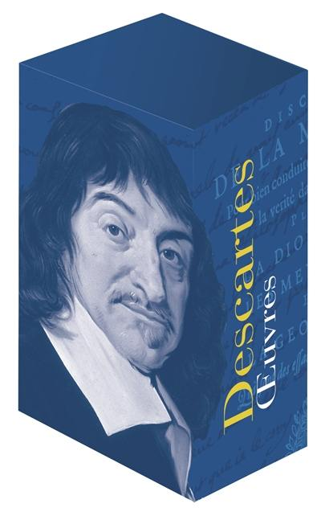

Years 1-4
哲学与科学
优先推进《谈谈方法》《论世界或论光》《第一哲学沉思集》，并配套整理与梅尔森及耶稣会士相关通信。
本计划拟由福建教育出版社挂名推进，围绕笛卡尔核心著作、重要通信与专题研究建立长期译介工程，并以作品、通信、注释和研究页面的方式逐步形成全集系列。

“笛卡尔全集中文版”计划不是单本文献的分散翻译，而是以文本校订、译注体例、通信配套和专题研究联动为基本思路。项目将优先处理笛卡尔思想的核心文本，同时通过通信材料呈现其科学、形而上学、心理学与神学论证的历史语境。
参考底本为 Gallimard《Bibliothèque de la Pléiade》2024 年新版 René Descartes, Œuvres。该版由 Jean-Marie Beyssade 准备、Denis Kambouchner 主持，Jean-Robert Armogathe 选编书信，分两卷收入笛卡尔核心著作、重要遗稿与书信选编。
以下计划依据“作品-通信”配套思路整理，围绕哲学与科学、情感与心理学、形而上学与体系建构、数字人文展示四条线索展开。
优先推进《谈谈方法》《论世界或论光》《第一哲学沉思集》，并配套整理与梅尔森及耶稣会士相关通信。
并行推进《论灵魂的激情》，配套笛卡尔与伊丽莎白公主的通信，以及心灵与身体关系相关材料。
推进《哲学原理》与晚期通信，呈现笛卡尔体系在形而上学、物理学和心理学之间的综合展开。
建设项目介绍、笛卡尔传记、作品目录、出版时间表、学术活动记录与通信网络等配套页面。
本区按照计划中的重点文本设置译本入口，用于呈现各卷主题、配套通信与研究重点。
围绕方法、科学与现代主体问题展开。
呈现怀疑、我思、上帝与形而上学基础论证。
配合伊丽莎白公主通信，讨论身体、心灵与情感。
集中呈现笛卡尔晚期体系化思想。